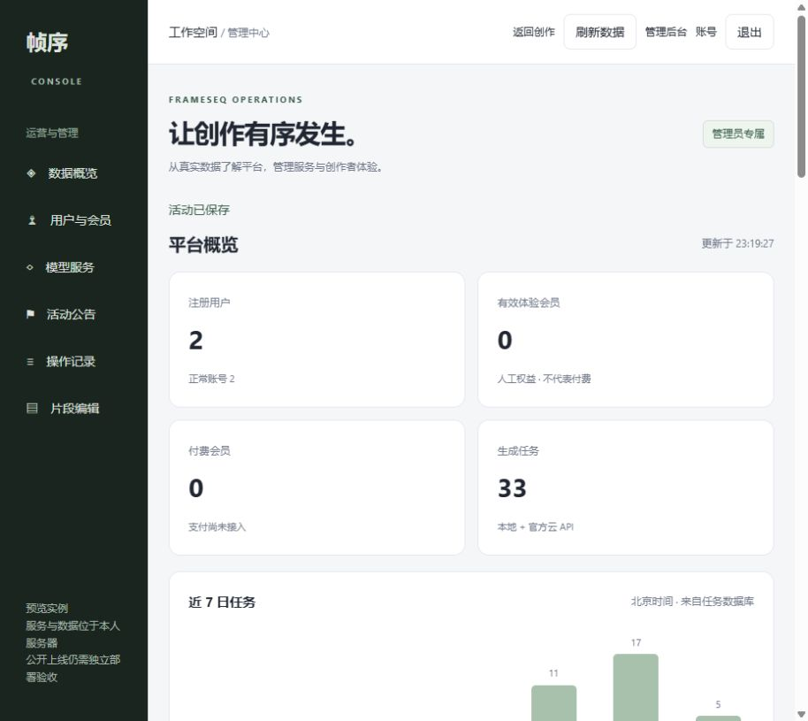

雨夜来信 · H3
邮差、信封、雨夜石巷与冷暖灯光。4秒请求，实测约4.46秒。视频由MiniMax官方服务生成，本站实现提交、查询、下载与预算预留。
- 实际规格
- 1344 × 768 · 107帧 · 24fps
- 验收范围
- 可播放和下载；没有验证跨镜角色一致性。
以上均为已有真实样例；切换播放器不会生成新视频或产生费用。
REAL OUTPUT, WITH LIMITS
邮差、信封、雨夜石巷与冷暖灯光。4秒请求，实测约4.46秒。视频由MiniMax官方服务生成，本站实现提交、查询、下载与预算预留。
以上均为已有真实样例；切换播放器不会生成新视频或产生费用。
TWELVE SHOTS. ONE EPISODE.
Wan2.1在单张GPU上分别生成镜头，再由CPU合成中文字幕和程序配乐。源画面480×272，输出960×544；普通缩放不增加原生细节，没有AI人声，跨镜人物与物件一致性仍有限。
下载已有成片 ↓这是已生成文件的播放，不是现场推理；不会访问模型服务。
FROM REQUEST TO RESULT
独立会话、同源请求校验与每条记录的owner_id。相同提示词不会作为跨账号共享结果的依据，任务和素材归属由后端检查。
项目 → 剧集 → 分镜 → 版本 → 选片 → 字幕与配乐导出。已完成十二镜、约一分钟《微光邮局》示例，跨镜外观仍有限。
账号启停、真实统计、体验会员、模型开关、活动草稿与审计。尚未接入真实支付，体验权益不等同付费会员。
选取第几秒、保存修改需求、以已有素材替换并导出新版本。当前是CPU剪辑，AI按提示词局部重拍仍待接入。

TRY THE APPLICATION
在解压目录按FRIEND_README.md启动Docker，登录后可创建项目、剧集和分镜，查看管理员后台。独立新数据库，不连接原作者服务器；本审阅包不执行生成和视频导出。
打开本机创作空间 ↗需先启动Docker；静态展示页可以直接离线浏览。
REVIEW THE ENGINEERING
2026年10月23日公开副本：126项CPU回归与20项前端规则通过。作者环境已验证H3两卡同视频及普通账号公网新生成；该历史实验生成约49分钟，主要等待当时的降温策略；后续8步和策略变更另见源码README，不作为当前速度承诺。此静态页仍播放历史云H3与本地Wan样例，不连接远程生成。当前源码未重新构建Docker，也未验收新主机GPU安装或生产级高并发。
本包包含可审阅源码与已有视频，上传源码不等于部署在线服务。正式上线仍需独立运行环境、域名与HTTPS、反向代理、外部存储、监控、真实负载与权限验收；本页不提供远程生成或管理员登录。